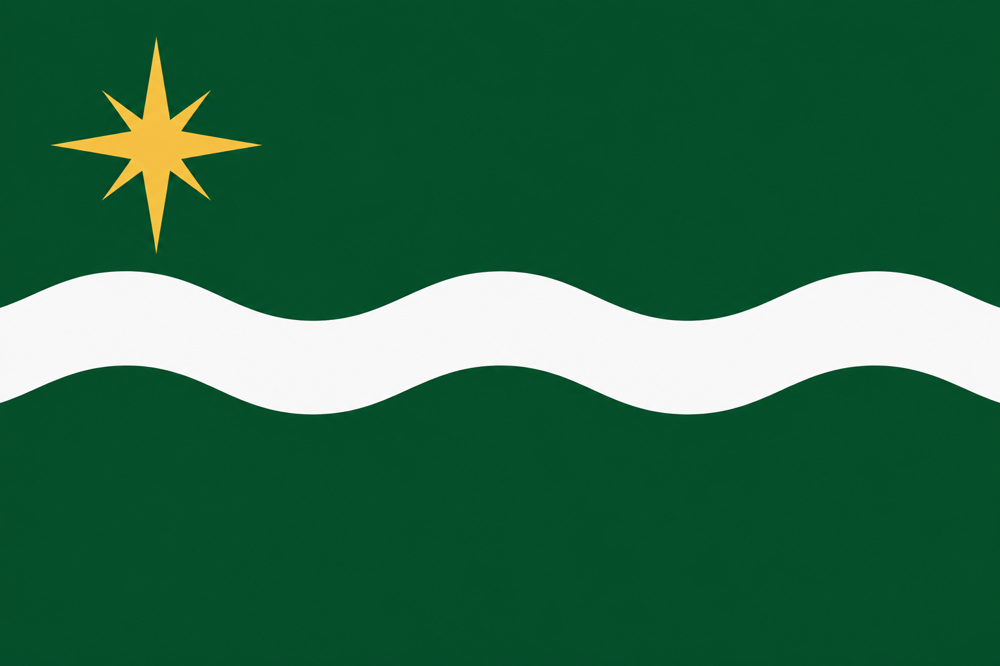
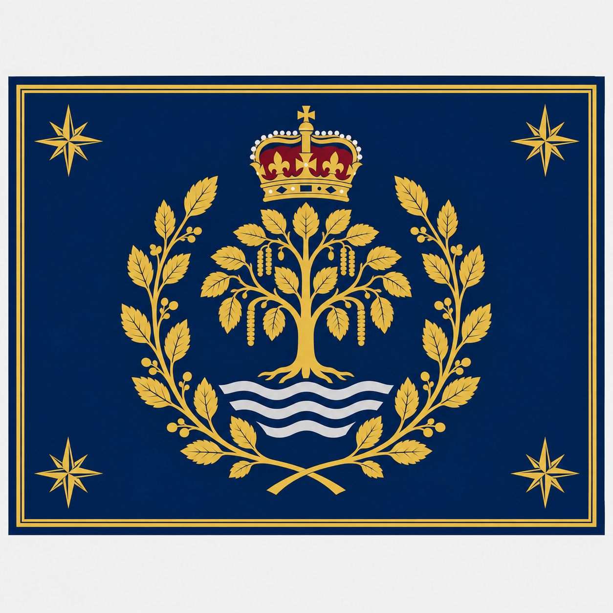

ALDERNIA
An online ecosystem and experiment


Aldernia is an online ecosystem. Its institutions and symbols are part of the project unless clearly identified as real-world material.
An online ecosystem and experiment


Aldernia is an online ecosystem. Its institutions and symbols are part of the project unless clearly identified as real-world material.